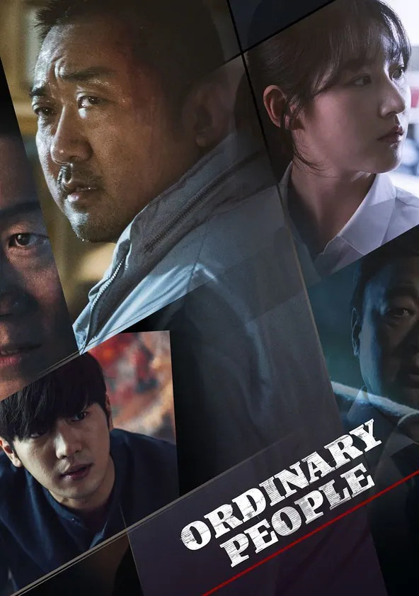
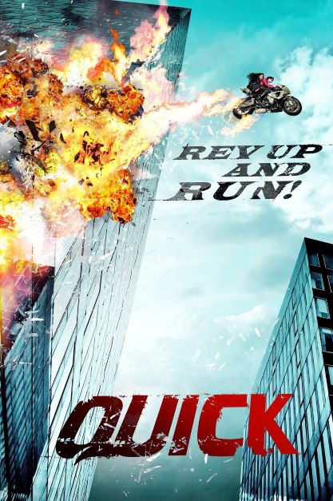

2005, провінційне містечко Чхонан, влада в якому негласно належить кримінальному босу Чан Дон-Су. Одного разу на чоловіка відбувається напад, дивом він залишається в живих, але його репутація непереможного воїна неабияк зіпсована. Він не має наміру терпіти глузування, знущання, тому має намір особисто відшукати злочинця, щоб покарати. На шлях упіймання вийшов і приватний детектив Чон Тхе-Сок з вірними союзниками. Все своє життя чоловік протистоїть злочинним елементам, гангстер, що відновлює авторитет в очах братви, не стане винятком, а поки що парочка має об'єднати зусилля, щоб досягти бажаної мети. Ненависний маніяк продовжує напади, місцеві жителі побоюються з'являтися на вулиці, щоб не стати випадковими жертвами. Злочинця необхідно зупинити, але поки що він на кілька кроків попереду досвідчених переслідувачів. Співробітники поліції не вірять у те, що всі злочини скоюються однією людиною. За їхньою версією – це випадкові збіги. Незабаром вони розчаруються.
Цікаво, що сюжет кримінального трилера "Гангстер, коп і диявол" заснований на реальних подіях. Початкова назва кінокартини звучить у перекладі як Історія лиходія. До речі, Сільвестру Сталлоне настільки сподобалася гра Ма Дон-соку, який виконав у фільмі роль гангстера, що його продюсерська компанія, яка купила права на ремейк стрічки, запросила актора до майбутнього проекту.
Варто згадати, що Дон Сік, окрім кар'єри в кіно, займається змішаними єдиноборствами та відомий у певних колах під псевдонімом Дон Лі. Свого часу він став тренером таких знаменитих бійців, як Марк Колман та Рендлмен. Серед найпомітніших його фільмів можна назвати Шустрий, Сусіди, Поїзд до Пусану. За першу він свого часу отримав національну премію Блакитний дракон, а остання стала у 2016 році найкасовішою у Південній Кореї, а її світові збори склали 130 мільйонів доларів.
 